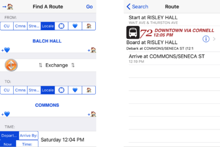
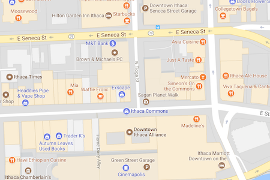

TCAT Directions
Image Source: Ride14850 App
To get to the Apple Harvest Festival, you need to find a bus that takes you to the Ithaca Commons at Seneca Street or Green Street. Use the Ride14850 app to locate the next bus coming to the stop closest to you.
When you leave the festival, go to the stop at Seneca Street or Green Street and buses should be running every 15-20 mins to get students back to campus.
Car Directions
Parking for the festival will be available in the Green, Seneca and Cayuga street garages for $5.
Address for each Parking Garage:
- Green Street: Green Street Garage, 122 E Green St, Ithaca, NY 14850
- Seneca Street: Seneca Street Garage, 215 N Tioga St, Ithaca, NY 14850
- Cayuga Street: #301 Cayuga Street Garage, 235 S Cayuga St, Ithaca, NY 14850